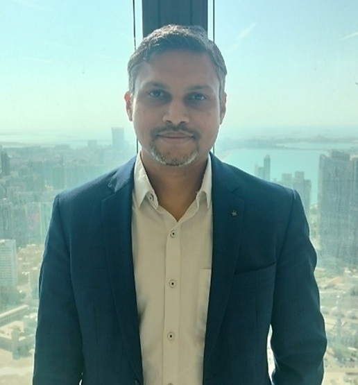

DIGITAL ENGINEERING PORTFOLIO
Transforming Physics into Intelligent Engineering Products through Simulation, Digital Twin, AI and Software Development.

Years Experience
Industrial Projects
Publications
Patents
Years of Engineering Experience
Industrial Engineering Projects
Patents Filed
Technical Publications
Published Hybrid Digital Twin Case Study
Hybrid Physics + AI Solutions
Mechanical Engineer with 15+ years of experience in CFD, thermal engineering, Digital Twin development, industrial AI, and Python application development. Currently working as a Digital Twin Architect developing hybrid physics-AI solutions for rotating equipment.
2024 - Present
Developing hybrid Digital Twin solutions, predictive analytics and industrial AI for rotating equipment.
2015 - 2024
CFD, thermal simulations, SOFC development and product design optimization.
2013 - 2015
Pump hydraulic design, CFD validation and performance testing.
2010 - 2013
Design and development of rotating electrical machines.
Selected engineering solutions developed across Digital Twin, Simulation, Industrial AI and Software Development.
Digital Twin Architect | 2024 - 2025
Led the development of physics-based and hybrid Digital Twin solutions for critical rotating and static equipment in the oil & gas industry. The platform combines engineering models with operational data to enable real-time asset monitoring, fault diagnostics and predictive maintenance.
Technologies:
Python • Digital Twin • CFD • FEA • 1D Simulation • Machine Learning • Predictive Analytics
Simulation Automation | Engineering Software
Designed and developed a Python-based automation framework to streamline CFD simulation workflows. The framework automated the complete simulation pipeline, reducing manual effort, improving consistency, and enabling engineers to execute large design studies efficiently.
Technologies:
Python • STAR-CCM+ • ANSYS • VBA • MATLAB • CFD Automation • Design Optimization
Python Application
Designed and developed a real-time Digital Twin of an industrial cooler using a transient thermal model, heat transfer calculations and interactive dashboard for monitoring equipment performance.
Tools: Python • Streamlit • NumPy • Plotly
Bosch Corporate Research | Thermal Engineering | CFD | System Simulation
Contributed to the development of high-temperature Solid Oxide Fuel Cell (SOFC) systems by leading thermal management, CFD simulations, system-level thermal modelling and simulation automation. The work focused on improving thermal efficiency, component integration and reducing engineering development time through advanced simulation methodologies.
Technologies:
Python • STAR-CCM+ • CFD • Heat Transfer • Thermal Management • 1D System Simulation • MATLAB • Excel • Simulation Automation
Personal Software Product
Developed a cloud-based stock market analytics platform that automates data collection, technical screening, portfolio tracking and market dashboards using Python and financial APIs.
Tools: Python • Flask • GCP • HTML • CSS • JavaScript
Electric Motors | Pumps | Wind Energy | Thermal Engineering
Delivered simulation-driven design and thermal optimization solutions across electric motors, pumps, wind generators, and advanced cooling systems. These projects involved CFD analysis, thermal management, design optimization, simulation automation, and experimental validation for improving product performance, reliability, and energy efficiency.
Technologies:
ANSYS CFX • STAR-CCM+ • ANSYS Workbench • Python • MATLAB • MPI • CFD • Thermal Analysis • Heat Transfer • Design Optimization
Download my latest resume or connect with me for opportunities in Digital Twin, Industrial AI and Engineering Software Development.
I'm always interested in collaborating on Digital Twin, Simulation, Industrial AI, and Engineering Software projects.
📧 rahulshverma@gmail.com
💼 LinkedIn: https://www.linkedin.com/in/rahul-kumar-verma-cfd/
💻 GitHub: github.com/yourgithub